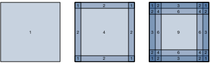
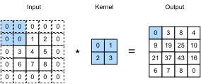
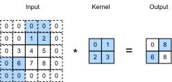

7.3. 填充与步幅¶
回想 图7.2.1 中卷积的例子。 输入的高度和宽度都是3， 卷积核的高度和宽度都是2， 于是得到的输出表示的维度为\(2\times2\)。 假设输入形状为\(n_\textrm{h}\times n_\textrm{w}\)， 卷积核形状为\(k_\textrm{h}\times k_\textrm{w}\)， 那么输出形状将为\((n_\textrm{h}-k_\textrm{h}+1) \times (n_\textrm{w}-k_\textrm{w}+1)\)： 我们只能将卷积核移动到一定位置， 再移动就会用完可供卷积的像素。
接下来，我们将探讨若干技术， 包括填充和带步幅的卷积， 它们能对输出尺寸提供更多控制。 作为动机，请注意：由于核的宽度和高度 通常大于\(1\)， 在应用许多连续的卷积之后， 我们往往会得到比输入小得多的输出。 如果从一幅\(240 \times 240\)像素的图像开始， 十层\(5 \times 5\)卷积 会把图像缩小到\(200 \times 200\)像素， 切掉图像的\(30 \%\)，同时也 抹掉了原图像边界上任何有趣的信息。 填充（padding）是处理这一问题最常用的工具。 在其他情况下，我们可能希望大幅降低维度， 例如当我们发现原始输入分辨率难以处理时。 带步幅的卷积（strided convolution）是一种常用的技术，在这些情形下可以派上用场。
import torch
from torch import nn
from mxnet import np, npx
from mxnet.gluon import nn
npx.set_np()
import jax
from flax import linen as nn
from jax import numpy as jnp
from d2l import jax as d2l
import tensorflow as tf
7.3.1. 填充¶
如上所述，应用卷积层时一个棘手的问题是， 我们往往会丢失图像边缘的像素。考虑 图7.3.1，它描绘了像素利用率随卷积核大小和像素在图像中位置的变化。角落处的像素几乎完全没有被用到。

图7.3.1 大小分别为\(1 \times 1\)、\(2 \times 2\)和\(3 \times 3\)的卷积的像素利用率。¶
由于我们通常使用较小的核， 对任一次卷积来说， 我们可能只会丢失少量像素， 但当应用许多连续的卷积层时， 这些损失会累积起来。 这个问题的一个直接解决办法 是在输入图像的边界周围增加额外的填充像素， 从而增大图像的有效尺寸。 通常，我们将额外像素的值设为零。 在 图7.3.2 中，我们对\(3 \times 3\)的输入进行填充， 将其尺寸增大到\(5 \times 5\)。 相应的输出也随之增大到\(4 \times 4\)的矩阵。 阴影部分是第一个输出元素，以及用于输出计算的输入张量和核张量元素：\(0\times0+0\times1+0\times2+0\times3=0\)。

图7.3.2 带填充的二维互相关。¶
一般地，如果我们总共添加\(p_\textrm{h}\)行填充 （大约一半在上方、一半在下方）， 并总共添加\(p_\textrm{w}\)列填充 （大约一半在左侧、一半在右侧）， 输出形状将为
这意味着输出的高度和宽度 将分别增加\(p_\textrm{h}\)和\(p_\textrm{w}\)。
在许多情况下，我们会希望令\(p_\textrm{h}=k_\textrm{h}-1\)、\(p_\textrm{w}=k_\textrm{w}-1\)， 使输入和输出具有相同的高度和宽度。 这样在构建网络时更容易预测每一层的输出形状。 假设这里\(k_\textrm{h}\)是奇数， 我们将在高度的两侧各填充\(p_\textrm{h}/2\)行。 如果\(k_\textrm{h}\)是偶数，一种可能是 在输入的上方填充\(\lceil p_\textrm{h}/2\rceil\)行， 在下方填充\(\lfloor p_\textrm{h}/2\rfloor\)行。 对宽度两侧我们也用同样的方式填充。
CNN 通常使用 高度和宽度为奇数的卷积核，例如1、3、5或7。 选择奇数核尺寸的好处是： 我们可以在顶部和底部填充相同行数、 在左侧和右侧填充相同列数的同时保持维度不变。
此外，使用奇数核和填充来精确保持维度 的做法还带来书写上的便利。
对于任意二维张量X， 当核的尺寸为奇数
且各边的填充行数和列数都相同时，
由此产生的输出与输入具有相同的高度和宽度，
我们知道输出Y[i, j]是由 输入与卷积核进行互相关计算得到的，
其中窗口以X[i, j]为中心。
在下面的例子中，我们创建一个高度和宽度都为3的二维卷积层， 并在所有的侧边应用1像素的填充。 给定一幅高度和宽度都为8的输入， 我们发现输出的高度和宽度也是8。
# We define a helper function to calculate convolutions. It initializes the
# convolutional layer weights and performs corresponding dimensionality
# elevations and reductions on the input and output
def comp_conv2d(conv2d, X):
# (1, 1) indicates that batch size and the number of channels are both 1
X = X.reshape((1, 1) + X.shape)
Y = conv2d(X)
# Strip the first two dimensions: examples and channels
return Y.reshape(Y.shape[2:])
# 1 row and column is padded on either side, so a total of 2 rows or columns
# are added
conv2d = nn.LazyConv2d(1, kernel_size=3, padding=1)
X = torch.rand(size=(8, 8))
comp_conv2d(conv2d, X).shape
# We define a helper function to calculate convolutions. It initializes
# the convolutional layer weights and performs corresponding dimensionality
# elevations and reductions on the input and output
def comp_conv2d(conv2d, X):
conv2d.initialize()
# (1, 1) indicates that batch size and the number of channels are both 1
X = X.reshape((1, 1) + X.shape)
Y = conv2d(X)
# Strip the first two dimensions: examples and channels
return Y.reshape(Y.shape[2:])
# 1 row and column is padded on either side, so a total of 2 rows or columns are added
conv2d = nn.Conv2D(1, kernel_size=3, padding=1)
X = np.random.uniform(size=(8, 8))
comp_conv2d(conv2d, X).shape
# We define a helper function to calculate convolutions. It initializes
# the convolutional layer weights and performs corresponding dimensionality
# elevations and reductions on the input and output
def comp_conv2d(conv2d, X):
# (1, X.shape, 1) indicates that batch size and the number of channels are both 1
key = jax.random.PRNGKey(d2l.get_seed())
X = X.reshape((1,) + X.shape + (1,))
Y, _ = conv2d.init_with_output(key, X)
# Strip the dimensions: examples and channels
return Y.reshape(Y.shape[1:3])
# 1 row and column is padded on either side, so a total of 2 rows or columns are added
conv2d = nn.Conv(1, kernel_size=(3, 3), padding='SAME')
X = jax.random.uniform(jax.random.PRNGKey(d2l.get_seed()), shape=(8, 8))
comp_conv2d(conv2d, X).shape
# We define a helper function to calculate convolutions. It initializes
# the convolutional layer weights and performs corresponding dimensionality
# elevations and reductions on the input and output
def comp_conv2d(conv2d, X):
# (1, 1) indicates that batch size and the number of channels are both 1
X = tf.reshape(X, (1, ) + X.shape + (1, ))
Y = conv2d(X)
# Strip the first two dimensions: examples and channels
return tf.reshape(Y, Y.shape[1:3])
# 1 row and column is padded on either side, so a total of 2 rows or columns
# are added
conv2d = tf.keras.layers.Conv2D(1, kernel_size=3, padding='same')
X = tf.random.uniform(shape=(8, 8))
comp_conv2d(conv2d, X).shape
当卷积核的高度和宽度不同时， 我们可以通过为高度和宽度设置不同的填充数 来使输出与输入具有相同的高度和宽度。
# We use a convolution kernel with height 5 and width 3. The padding on either
# side of the height and width are 2 and 1, respectively
conv2d = nn.LazyConv2d(1, kernel_size=(5, 3), padding=(2, 1))
comp_conv2d(conv2d, X).shape
# We use a convolution kernel with height 5 and width 3. The padding on
# either side of the height and width are 2 and 1, respectively
conv2d = nn.Conv2D(1, kernel_size=(5, 3), padding=(2, 1))
comp_conv2d(conv2d, X).shape
# We use a convolution kernel with height 5 and width 3. The padding on
# either side of the height and width are 2 and 1, respectively
conv2d = nn.Conv(1, kernel_size=(5, 3), padding=(2, 1))
comp_conv2d(conv2d, X).shape
# We use a convolution kernel with height 5 and width 3. The padding on
# either side of the height and width are 2 and 1, respectively
conv2d = tf.keras.layers.Conv2D(1, kernel_size=(5, 3), padding='same')
comp_conv2d(conv2d, X).shape
7.3.2. 步幅¶
在计算互相关时， 我们从输入张量的左上角开始放置卷积窗口， 然后将其向下和向右滑过所有位置。 在前面的例子中，我们默认一次滑动一个元素。 然而，有时为了计算效率， 或者因为我们希望下采样， 我们会一次将窗口移动一个以上的元素， 跳过中间位置。如果卷积核很大， 这会特别有用，因为大核会捕捉底层图像的大片区域。
我们将每次滑动所遍历的行数和列数称为步幅（stride）。 到目前为止，我们在高度和宽度上使用的步幅都为1。 有时，我们可能希望使用更大的步幅。 图7.3.3 展示了一个垂直方向步幅为3、水平方向步幅为2的二维互相关运算。 阴影部分是输出元素，以及用于输出计算的输入张量和核张量元素：\(0\times0+0\times1+1\times2+2\times3=8\)，\(0\times0+6\times1+0\times2+0\times3=6\)。 可以看到，当生成第一列的第二个元素时， 卷积窗口向下滑动三行。 当生成第一行的第二个元素时， 卷积窗口向右滑动两列。 当卷积窗口继续在输入上向右滑动两列时， 就没有输出了，因为输入元素无法填满窗口 （除非我们再添加一列填充）。

图7.3.3 高度和宽度上的步幅分别为3和2的互相关。¶
一般地，当高度的步幅为\(s_\textrm{h}\) 、宽度的步幅为\(s_\textrm{w}\)时，输出形状为
如果令\(p_\textrm{h}=k_\textrm{h}-1\)、\(p_\textrm{w}=k_\textrm{w}-1\)， 那么输出形状可以简化为 \(\lfloor(n_\textrm{h}+s_\textrm{h}-1)/s_\textrm{h}\rfloor \times \lfloor(n_\textrm{w}+s_\textrm{w}-1)/s_\textrm{w}\rfloor\)。 更进一步，如果输入的高度和宽度 能被高度和宽度上的步幅整除， 那么输出形状将是\((n_\textrm{h}/s_\textrm{h}) \times (n_\textrm{w}/s_\textrm{w})\)。
下面，我们将高度和宽度上的步幅都设为2， 从而将输入的高度和宽度减半。
conv2d = nn.LazyConv2d(1, kernel_size=3, padding=1, stride=2)
comp_conv2d(conv2d, X).shape
conv2d = nn.Conv2D(1, kernel_size=3, padding=1, strides=2)
comp_conv2d(conv2d, X).shape
conv2d = nn.Conv(1, kernel_size=(3, 3), padding=1, strides=2)
comp_conv2d(conv2d, X).shape
conv2d = tf.keras.layers.Conv2D(1, kernel_size=3, padding='same', strides=2)
comp_conv2d(conv2d, X).shape
让我们看一个稍微复杂的例子。
conv2d = nn.LazyConv2d(1, kernel_size=(3, 5), padding=(0, 1), stride=(3, 4))
comp_conv2d(conv2d, X).shape
conv2d = nn.Conv2D(1, kernel_size=(3, 5), padding=(0, 1), strides=(3, 4))
comp_conv2d(conv2d, X).shape
conv2d = nn.Conv(1, kernel_size=(3, 5), padding=(0, 1), strides=(3, 4))
comp_conv2d(conv2d, X).shape
conv2d = tf.keras.layers.Conv2D(1, kernel_size=(3,5), padding='valid',
strides=(3, 4))
comp_conv2d(conv2d, X).shape
7.3.3. 小结与讨论¶
填充可以增加输出的高度和宽度。这通常用于使输出与输入具有相同的高度和宽度，以避免输出不期望的收缩。此外，它还能确保所有像素被使用的频率相同。通常我们在输入高度和宽度的两侧选择对称填充。在这种情况下，我们称之为\((p_\textrm{h}, p_\textrm{w})\)填充。最常见的是令\(p_\textrm{h} = p_\textrm{w}\)，这时我们简单地说选择填充\(p\)。
类似的约定也适用于步幅。当水平步幅\(s_\textrm{h}\)与垂直步幅\(s_\textrm{w}\)相同时，我们简单地谈论步幅\(s\)。步幅可以降低输出的分辨率，例如当\(n > 1\)时，将输出的高度和宽度减小到输入的\(1/n\)。默认情况下，填充为0，步幅为1。
到目前为止，我们讨论的所有填充都只是用零来扩展图像。这具有显著的计算优势，因为实现起来非常简单。此外，可以对算子进行设计，使其隐式地利用这种填充，而无需分配额外的内存。同时，它使 CNN 能够仅仅通过学习“空白”所在的位置，就在图像中编码隐式的位置信息。零填充有许多替代方案。Alsallakh et al. (2020) 对这些方案做了广泛的综述（尽管没有明确说明何时应使用非零填充，除非出现伪影）。
7.3.4. 练习¶
对于本节最后一个代码示例，核大小为\((3, 5)\)、填充为\((0, 1)\)、步幅为\((3, 4)\)， 计算输出形状，检验它是否与实验结果一致。
对于音频信号，步幅为2对应什么？
实现镜像填充，即通过简单镜像边界值来扩展张量的填充。
步幅大于1有什么计算上的好处？
步幅大于1可能有什么统计上的好处？
你会如何实现步幅\(\frac{1}{2}\)？它对应什么？什么时候会有用？